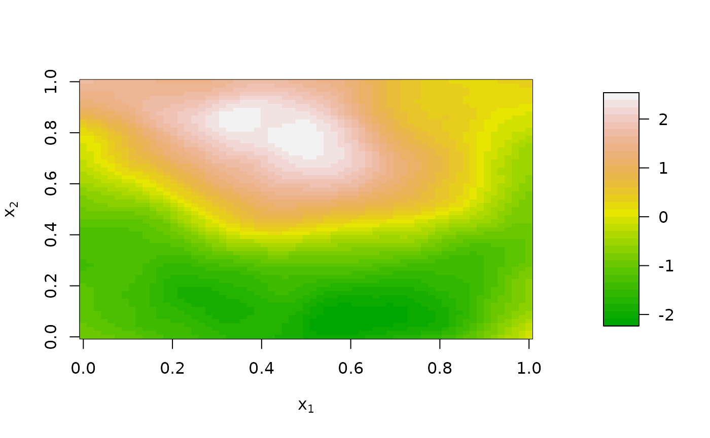

User Guide
user_guide.RmdUsing EasyTPRS
This package is designed to make created Thin Plate Regression Splines easy. We essentially provide a wrapper for ‘mgcv’ and ‘spectralGP’ to help with creating and visualizing TPRS. TPRS are a method of controlling for unmeasures spatial confounding. You essentially add however many basis splines you want to a spatial regression, and they hopefully absorb some unseen confounding, isolating the true effect.
Here is an example of a using TPRS in regression: You can see they can be used to correct for confounding and bring the beta estimate for x closer to the truth
library(EasyTPRS.561final)
set.seed(20)
size = 128
gp=EasyTPRS.561final::simulate_gp(size, .5, plot = F)## Note that the spatial range parameter is interpreted based
## on the process living on a (0,1)^d grid
confounder=EasyTPRS.561final::simulate_gp(size, .5, plot = F)## Note that the spatial range parameter is interpreted based
## on the process living on a (0,1)^d grid
x = gp$process + .4*confounder$process
y = x + rnorm(size**2, mean = 0, sd = 1) + .4*confounder$process
lm(y~x)##
## Call:
## lm(formula = y ~ x)
##
## Coefficients:
## (Intercept) x
## -0.08992 1.20891As you can see, the true b1 is 1, but the confounder gives us an overestimate. n
tprs_obj = EasyTPRS.561final::create_n_2D_TPRS(size, n = 20)## Note that the spatial range parameter is interpreted based
## on the process living on a (0,1)^d grid
basis_splines = data.matrix(tprs_obj$TPRS)
summary(lm(y~x + basis_splines))##
## Call:
## lm(formula = y ~ x + basis_splines)
##
## Residuals:
## Min 1Q Median 3Q Max
## -4.0773 -0.6798 -0.0019 0.6931 3.7574
##
## Coefficients:
## Estimate Std. Error t value Pr(>|t|)
## (Intercept) -0.666381 0.543566 -1.226 0.22024
## x 1.194363 0.020858 57.261 < 2e-16 ***
## basis_splinesX20 -0.034012 0.035998 -0.945 0.34475
## basis_splinesX21 -0.003526 0.033413 -0.106 0.91595
## basis_splinesX1 0.354005 0.609378 0.581 0.56130
## basis_splinesX2 -0.068257 0.008469 -8.059 8.20e-16 ***
## basis_splinesX3 -0.074112 0.008249 -8.984 < 2e-16 ***
## basis_splinesX4 -0.017387 0.023611 -0.736 0.46151
## basis_splinesX5 -0.157859 0.017743 -8.897 < 2e-16 ***
## basis_splinesX6 -0.001974 0.019827 -0.100 0.92071
## basis_splinesX7 -0.009613 0.020066 -0.479 0.63189
## basis_splinesX8 0.049151 0.042675 1.152 0.24944
## basis_splinesX9 -0.035248 0.008036 -4.386 1.16e-05 ***
## basis_splinesX10 -0.080366 0.008283 -9.703 < 2e-16 ***
## basis_splinesX11 -0.043128 0.031006 -1.391 0.16425
## basis_splinesX12 0.034100 0.011067 3.081 0.00206 **
## basis_splinesX13 0.044644 0.022408 1.992 0.04635 *
## basis_splinesX14 0.181355 0.020709 8.757 < 2e-16 ***
## basis_splinesX15 0.002791 0.013511 0.207 0.83636
## basis_splinesX16 -0.015966 0.012134 -1.316 0.18823
## basis_splinesX17 -0.103226 0.035027 -2.947 0.00321 **
## basis_splinesX18 0.060249 0.023083 2.610 0.00906 **
## ---
## Signif. codes: 0 '***' 0.001 '**' 0.01 '*' 0.05 '.' 0.1 ' ' 1
##
## Residual standard error: 1.009 on 16362 degrees of freedom
## Multiple R-squared: 0.6751, Adjusted R-squared: 0.6747
## F-statistic: 1619 on 21 and 16362 DF, p-value: < 2.2e-16You can see the estimate gets better (closer to one).
You can also visualize the splines with visualize_2D_TPRS().
visualize_2D_TPRS(tprs_obj = tprs_obj)Also as a bonus, you can create a Gaussian process with simulate_gp, a wrapper for the spectralGP package:
simulate_gp(128, spectral_density = .5, plot = T)## Note that the spatial range parameter is interpreted based
## on the process living on a (0,1)^d grid
## A Gaussian process object, approximated in the Fourier basis
## Dimension of domain: 2
## Regular grid of size: 128 by 128
## Spectral density function of correlation function: matern.specdens
## Correlation function (spectral density) parameters: 0.5 2